a = np.arange(10)
b = np.arange(10, 20)
test_eq(check_overlap(a, b), False)
a = np.arange(10)
b = np.arange(9, 20)
test_eq(check_overlap(a, b), [9])
a = np.arange(10)
b = np.arange(10, 20)
c = np.arange(20, 30)
test_eq(check_overlap(a, b, c), False)
a = np.arange(10)
b = np.arange(10, 20)
c = np.arange(10, 30)
test_eq(check_overlap(a, b, c), ([], [], [10, 11, 12, 13, 14, 15, 16, 17, 18, 19]))Spliting data
Functions required to perform cross-validation and transform unique time series sequence into multiple samples ready to be used by a time series model.
RandomSplitter
RandomSplitter (valid_pct=0.2, seed=None)
Create function that splits items between train/val with valid_pct randomly.
balance_idx
balance_idx (o, shuffle=False, random_state=None, verbose=False)
leakage_finder
leakage_finder (*splits, verbose=True)
You can pass splits as a tuple, or train, valid, …
check_splits_overlap
check_splits_overlap (splits)
check_overlap
check_overlap (a, b, c=None)
o = np.concatenate([np.ones(10), np.ones(20)*2, np.ones(30)*3])
idxs = balance_idx(o)
np.unique(o[idxs], return_counts=True)(array([1., 2., 3.]), array([30, 30, 30]))l = L(list(concat(np.zeros(5), np.ones(10)).astype(int)))
balanced_idx = balance_idx(l)
test_eq(np.mean(l[balanced_idx]), 0.5)
test_eq(isinstance(balanced_idx, L), True)
l = list(concat(np.zeros(5), np.ones(10)).astype(int))
balanced_idx = balance_idx(l)
test_eq(np.mean(L(l)[balanced_idx]), 0.5)
test_eq(isinstance(balanced_idx, L), True)
a = concat(np.zeros(5), np.ones(10)).astype(int)
balanced_idx = balance_idx(a)
test_eq(np.mean(a[balanced_idx]), 0.5)
test_eq(isinstance(balanced_idx, L), True)
t = concat(torch.zeros(5), torch.ones(10))
balanced_idx = balance_idx(t, shuffle=True)
test_eq(t[balanced_idx].mean(), 0.5)
test_eq(isinstance(balanced_idx, L), True)a, b = np.arange(100_000), np.arange(100_000, 200_000)soft_labels = True
filter_pseudolabels = .5
balanced_pseudolabels = True
pseudolabels = torch.rand(1000, 3)
pseudolabels = torch.softmax(pseudolabels, -1) if soft_labels else torch.argmax(pseudolabels, -1)
hpl = torch.argmax(pseudolabels, -1) if soft_labels else pseudolabels
if filter_pseudolabels and pseudolabels.ndim > 1:
error = 1 - pseudolabels.max(-1).values
filt_pl_idx = np.arange(len(error))[error < filter_pseudolabels]
filt_pl = pseudolabels[error < filter_pseudolabels]
assert len(filt_pl) > 0, 'no filtered pseudolabels'
filt_hpl = torch.argmax(filt_pl, -1)
else:
filt_pl_idx = np.arange(len(pseudolabels))
filt_pl = filt_hpl = pseudolabelspl_split = filt_pl_idx[balance_idx(filt_hpl)] if balanced_pseudolabels else filt_pl_idx
test_eq(hpl[pl_split].float().mean(), np.mean(np.unique(hpl)))TrainValidTestSplitter
TrainValidTestSplitter (n_splits:int=1, valid_size:Union[float,int]=0.2, test_size:Union[float,int]=0.0, train_only:bool=False, stratify:bool=True, balance:bool=False, shuffle:bool=True, random_state:Optional[int]=None, verbose:bool=False, **kwargs)
Split items into random train, valid (and test optional) subsets.
plot_splits
plot_splits (splits)
get_splits
get_splits (o, n_splits:int=1, valid_size:float=0.2, test_size:float=0.0, train_only:bool=False, train_size:Union[NoneType,float,int]=None, balance:bool=False, shuffle:bool=True, stratify:bool=True, check_splits:bool=True, random_state:Optional[int]=None, show_plot:bool=True, verbose:bool=False)
Arguments: o : object to which splits will be applied, usually target. n_splits : number of folds. Must be an int >= 1. valid_size : size of validation set. Only used if n_splits = 1. If n_splits > 1 valid_size = (1. - test_size) / n_splits. test_size : size of test set. Default = 0. train_only : if True valid set == train set. This may be useful for debugging purposes. train_size : size of the train set used. Default = None (the remainder after assigning both valid and test). Useful for to get learning curves with different train sizes or get a small batch to debug a neural net. balance : whether to balance data so that train always contain the same number of items per class. shuffle : whether to shuffle data before splitting into batches. Note that the samples within each split will be shuffle. stratify : whether to create folds preserving the percentage of samples for each class. check_splits : whether to perform leakage and completion checks. random_state : when shuffle is True, random_state affects the ordering of the indices. Pass an int for reproducible output. show_plot : plot the split distribution
n_splits = 5
valid_size = 0.2
test_size = 0.2
train_only = False # set to True for debugging (valid = train)
train_size = 5000
stratify = True
balance = False
shuffle = True
predefined_splits = None
show_plot = True
check_splits = True
random_state = 23
y = np.random.randint(0, 3, 10000) + 100
splits = get_splits(y, n_splits=n_splits, valid_size=valid_size, test_size=test_size, shuffle=shuffle, balance=balance, stratify=stratify,
train_only=train_only, train_size=train_size, check_splits=check_splits, random_state=random_state, show_plot=show_plot, verbose=True)
splits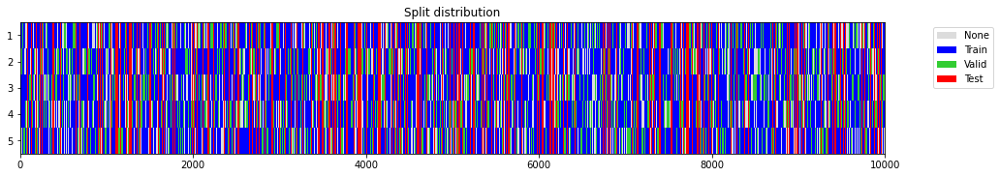
(((#5000) [1718,222,9928,6248,3023,1602,520,2695,6569,9200...],
(#1600) [2384,5270,3416,4929,198,8493,665,6932,3788,360...],
(#2000) [1658,3154,2152,5722,5097,6676,3291,4163,8816,8215...]),
((#5000) [6713,9124,2622,2220,7555,2255,9939,7897,43,6353...],
(#1600) [6431,1131,5724,5436,4984,4423,9727,9543,2655,9997...],
(#2000) [1658,3154,2152,5722,5097,6676,3291,4163,8816,8215...]),
((#5000) [8433,3064,8809,3001,8699,6116,7246,5279,4955,5657...],
(#1600) [2697,5677,6890,701,7436,4210,7615,9913,6152,6734...],
(#2000) [1658,3154,2152,5722,5097,6676,3291,4163,8816,8215...]),
((#5000) [5594,998,6712,4855,2142,7147,470,6387,7052,9604...],
(#1600) [4172,3592,1078,6390,6279,7852,6931,307,126,5418...],
(#2000) [1658,3154,2152,5722,5097,6676,3291,4163,8816,8215...]),
((#5000) [1624,9774,1380,8317,6057,7321,2456,6930,8186,9092...],
(#1600) [7853,493,7711,945,8435,392,7914,5539,7929,490...],
(#2000) [1658,3154,2152,5722,5097,6676,3291,4163,8816,8215...]))train_size=256
y = np.random.randint(0, 3, 1000) + 100
splits = get_splits(y, train_size=train_size, train_only=True)
test_eq(splits[0], splits[1])
test_eq(len(splits[0]), train_size)
splitsvalid == train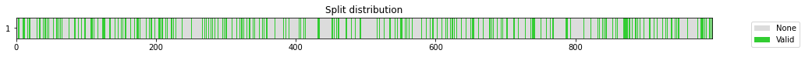
((#256) [881,194,30,897,377,992,251,334,693,42...],
(#256) [881,194,30,897,377,992,251,334,693,42...])TSSplitter
TSSplitter (valid_size:Union[int,float]=0.2, test_size:Union[int,float]=0.0, show_plot:bool=True)
Create function that splits items between train/val with valid_size without shuffling data.
y = np.arange(1000) + 100
test_eq(TimeSplitter(valid_size=0.2)(y)[1], L(np.arange(800, 1000).tolist()))
test_eq(TimeSplitter(valid_size=0.2)(y)[0], TimeSplitter(valid_size=200)(y)[0])
TimeSplitter(valid_size=0.2, show_plot=True)(y)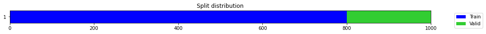


((#800) [0,1,2,3,4,5,6,7,8,9...],
(#200) [800,801,802,803,804,805,806,807,808,809...])n_splits = 5
valid_size = 0.2
test_size = 0
train_only = False # set to True for debugging (valid = train)
train_size = None
stratify = True
balance = True
shuffle = True
predefined_splits = None
show_plot = True
check_splits = True
random_state = 23
splits = get_splits(y, n_splits=n_splits, valid_size=valid_size, test_size=test_size, shuffle=shuffle, balance=balance, stratify=stratify,
train_only=train_only, train_size=train_size, check_splits=check_splits, random_state=random_state, show_plot=show_plot, verbose=True)
split = splits[0] if n_splits == 1 else splits[0][0]
y[split].mean(), splitstratify set to False as n_splits=5 cannot be greater than the min number of members in each class (1).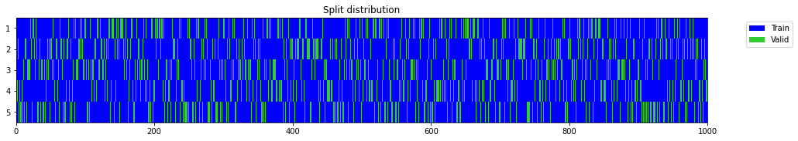
(601.11, (#800) [314,194,782,789,502,917,137,415,904,181...])list([splits[0], splits[1], splits[2], splits[3], splits[4]])[((#800) [314,194,782,789,502,917,137,415,904,181...],
(#200) [362,151,934,378,95,597,500,117,980,844...]),
((#800) [312,198,777,788,515,910,145,413,898,186...],
(#200) [352,133,955,396,64,596,442,79,991,882...]),
((#800) [311,197,783,791,507,922,145,416,908,184...],
(#200) [338,125,912,361,54,594,486,88,994,859...]),
((#800) [296,181,782,789,493,917,130,401,905,165...],
(#200) [405,199,953,444,113,610,515,137,997,881...]),
((#800) [320,190,782,788,506,906,141,412,893,178...],
(#200) [336,149,942,358,49,582,472,70,990,907...])]n_splits = 5
valid_size = 0.
test_size = 0.
shuffle = True
stratify = True
train_only = True
train_size = None
check_splits = True
random_state = 1
show_plot = True
splits = get_splits(y, n_splits=n_splits, valid_size=valid_size, test_size=test_size, shuffle=shuffle, stratify=stratify,
train_only=train_only, train_size=train_size, check_splits=check_splits, random_state=random_state, show_plot=show_plot, verbose=True)
for split in splits:
test_eq(len(split[0]), len(y))
test_eq(np.sort(split[0]), np.arange(len(y)))stratify set to False as n_splits=5 cannot be greater than the min number of members in each class (1).
valid == train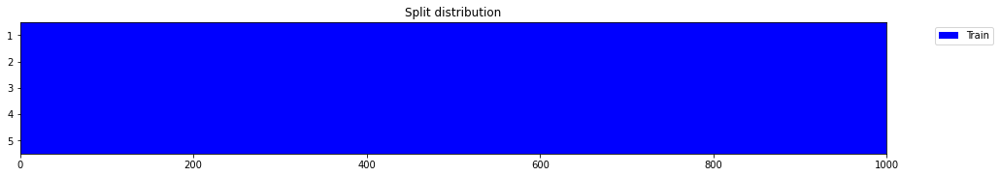
n_splits = 5
y = np.random.randint(0, 2, 1000)
splits = get_splits(y, n_splits=n_splits, shuffle=False, check_splits=True)
test_eq(np.concatenate((L(zip(*splits))[1])), np.arange(len(y)))
splits = get_splits(y, n_splits=n_splits, shuffle=True, check_splits=True)
test_eq(np.sort(np.concatenate((L(zip(*splits))[1]))), np.arange(len(y)))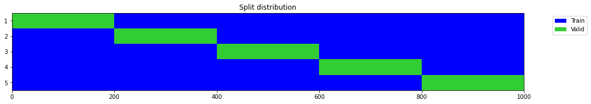
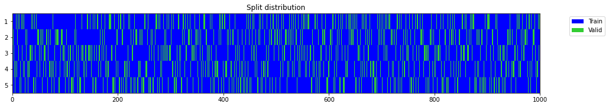
n_splits = 2
y = np.random.randint(0, 2, 1000)
splits = get_splits(y, n_splits=n_splits, test_size=0.2, shuffle=False)
for i in range(n_splits): leakage_finder(*splits[i])
test_eq(len(splits), n_splits)
test_eq(len(splits[0]), 3)
s = []
[s.extend(split) for split in splits[0]]
test_eq(np.sort(s), np.arange(len(y)))
s = []
[s.extend(split) for split in splits[1]]
test_eq(np.sort(s), np.arange(len(y)))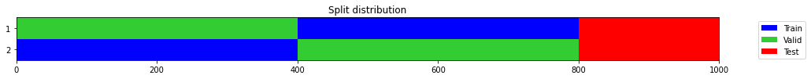
y = np.random.randint(0, 2, 1000)
splits1 = get_splits(y, valid_size=.25, test_size=0, random_state=23, stratify=True, shuffle=True)
splits2 = get_splits(y, valid_size=.25, test_size=0, random_state=23, stratify=True, shuffle=True)
splits3 = get_splits(y, valid_size=.25, test_size=0, random_state=None, stratify=True, shuffle=True)
splits4 = get_splits(y, valid_size=.25, test_size=0, random_state=None, stratify=True, shuffle=True)
test_eq(splits1[0], splits2[0])
test_ne(splits3[0], splits4[0])
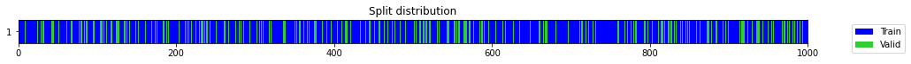
y = np.random.randint(0, 2, 100)
splits = get_splits(y, valid_size=.25, test_size=0, random_state=23, stratify=True, shuffle=True)
test_eq(len(splits), 2)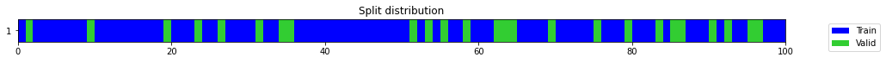
y = np.random.randint(0, 2, 100)
splits = get_splits(y, valid_size=.25, test_size=0, random_state=23, stratify=True)
test_eq(len(splits), 2)y = np.random.randint(0, 2, 100)
splits = get_splits(y, valid_size=.25, test_size=20, random_state=23, stratify=True)
test_eq(len(splits), 3)
leakage_finder(*splits)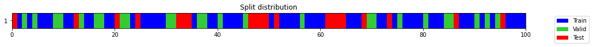
splits = TrainValidTestSplitter(valid_size=.25, test_size=20, random_state=23, stratify=True)(np.random.randint(0, 2, 100))
test_eq(len(splits[1]), 25)
test_eq(len(splits[2]), 20)o = np.random.randint(0, 2, 1000)
for p in [1, .75, .5, .25, .125]:
splits = get_splits(o, train_size=p)
test_eq(len(splits[0]), len(o) * .8 * p)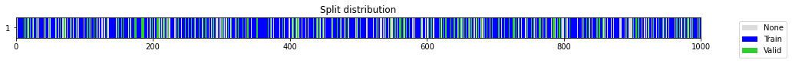
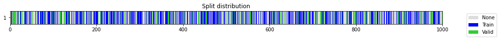
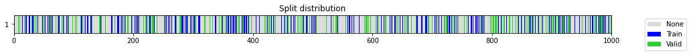
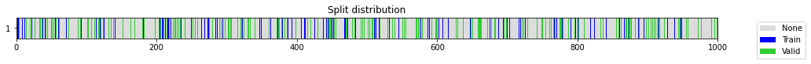
y = L([0] * 50 + [1] * 25 + [2] * 15 + [3] * 10)
splits = get_splits(y, valid_size=.2, test_size=.2)
test_eq(np.mean(y[splits[0]])==np.mean(y[splits[1]])==np.mean(y[splits[2]]), True)
splits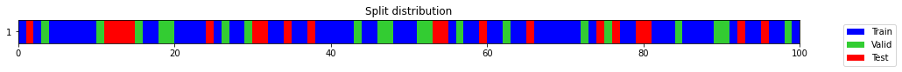
((#60) [57,55,28,70,67,87,16,41,35,99...],
(#20) [89,26,90,52,98,43,46,18,84,19...],
(#20) [30,53,95,92,79,12,59,76,65,14...])y = L([0] * 50 + [1] * 25 + [2] * 15 + [3] * 10)
splits = get_splits(y, n_splits=1, valid_size=.2, test_size=.2, shuffle=False)
# test_eq(splits[0] + splits[1] + splits[2], np.arange(100))
splits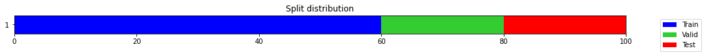
((#60) [0,1,2,3,4,5,6,7,8,9...],
(#20) [60,61,62,63,64,65,66,67,68,69...],
(#20) [80,81,82,83,84,85,86,87,88,89...])splits = get_splits(np.random.randint(0,5,100), valid_size=0.213, test_size=17)
test_eq(len(splits[1]), 21)
test_eq(len(splits[2]), 17)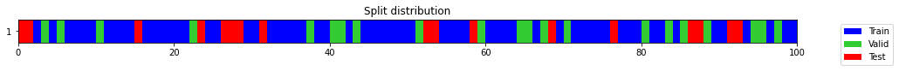
splits = get_splits(np.random.randint(0,5,100), valid_size=0.213, test_size=17, train_size=.2)
splits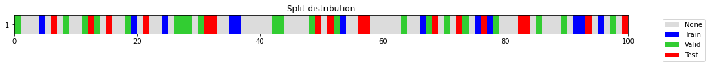
((#12) [53,35,77,4,66,95,91,24,36,19...],
(#21) [0,48,97,30,11,42,89,13,27,63...],
(#17) [49,76,72,56,82,93,21,57,99,83...])combine_split_data
combine_split_data (xs, ys=None)
xs is a list with X_train, X_valid, …. ys is None or a list with y_train, y_valid, ….
get_predefined_splits
get_predefined_splits (*xs)
xs is a list with X_train, X_valid, …
get_splits_len
get_splits_len (splits)
X_train, y_train, X_valid, y_valid = np.random.rand(3,3,4), np.random.randint(0,2,3), np.random.rand(2,3,4), np.random.randint(0,2,2)
X, y, splits = combine_split_data([X_train, X_valid], [y_train, y_valid])
test_eq(X_train, X[splits[0]])
test_eq(X_valid, X[splits[1]])
test_type(X_train, X)
test_type(y_train, y)X_train, y_train, X_valid, y_valid = np.random.rand(3,4), np.random.randint(0,2,3), np.random.rand(2,4), np.random.randint(0,2,2)
X, y, splits = combine_split_data([X_train, X_valid], [y_train, y_valid])
test_eq(X_train[:, None], X[splits[0]])
test_eq(X_valid[:, None], X[splits[1]])
test_type(X_train, X)
test_type(y_train, y)